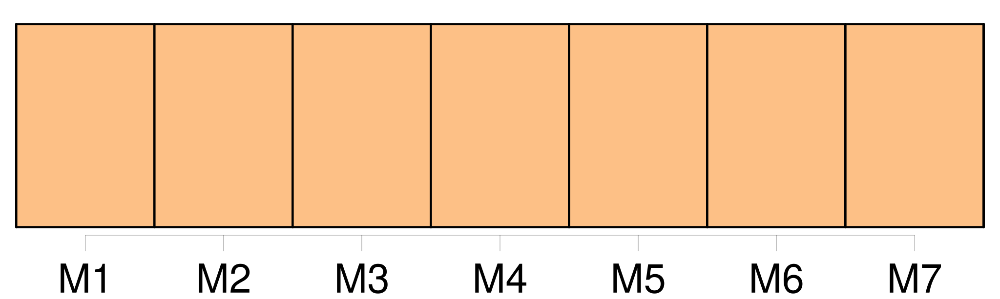
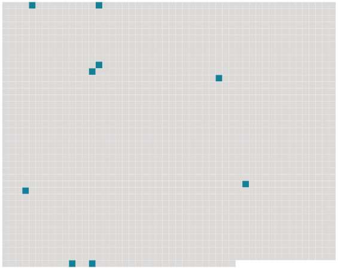

Longueur nb maillons : 9 mentions |
 |
Huit jours après, [nous] étions amis.
Huit jours de plus, et [nous] le devenions encore davantage. [17 phrases]
[Nous] nous étendions alors sur la terrasse, à peine enveloppés en de fins et flottants tissus d'Orient.
Quand la grande lune illuminante des pays chauds s'étalait en plein dans le ciel, éclairant la ville et le golfe avec son cadre arrondi de montagnes, [nous] apercevions alors sur toutes les autres terrasses comme une armée de silencieux fantômes étendus qui parfois se levaient, changeaient de place, et se recouchaient sous la tiédeur langoureuse du ciel apaisé.
Malgré l'éclat de ces soirées d'Afrique, Marroca s'obstinait à se mettre nue encore sous les clairs rayons de la lune ; elle ne s'inquiétait guère de tous ceux qui [nous] pouvaient voir, et souvent elle poussait par la nuit, malgré mes craintes et mes prières, de longs cris vibrants, qui faisaient au loin hurler les chiens. [38 phrases] Je repris enfin mon assurance et je le lui prouvai de tout mon pouvoir, si bien qu'au bout de deux heures [nous] ne songions guère encore au repos, quand des coups violents frappés soudain contre la porte [nous] firent tressaillir ; et une voix forte d'homme cria : --« Marroca, c'est moi. [29 phrases]
[Nous] avions joué [notre] vie stupidement ; j'en avais encore froid dans le dos, et ces rires fous me blessaient un peu. |
 |
Il est possible de télécharger la ressource sur la page Ortolang |
Si vous avez des questions ou vous voyez des erreurs, merci d'envoyer un mail à silvia.federzoni89@gmail.com |